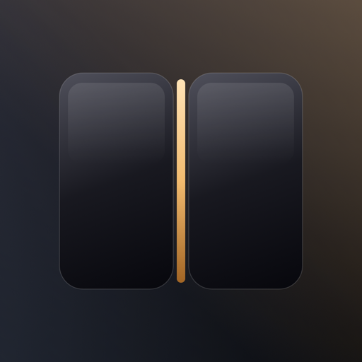

折记
iPhone Duo · 折叠次数记录
安装到 iPhone开发签名 · 仅限已注册设备
安装步骤
1. 用 Safari 打开本页（微信 / 其他 App 内置浏览器不行）。
2. 点「安装到 iPhone」，回到桌面等待图标出现。
3. 首次打开若提示未受信任：设置 → 通用 → VPN 与设备管理 → “shuangbin he” → 信任。
4. 若提示需要开发者模式：设置 → 隐私与安全性 → 开发者模式 → 打开并重启。
注意
· 这是开发签名版本，描述文件一年有效（至 2027-11-01），设备 UDID 已在描述文件内。
· 安装包链接由限时托管提供，过期后重新构建 / 重新上传即可。